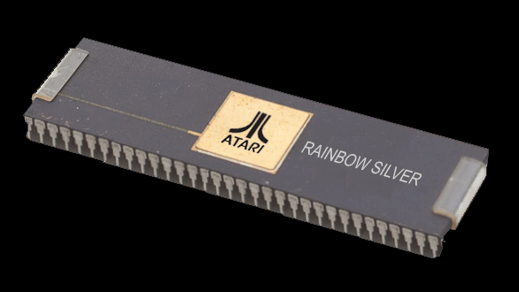
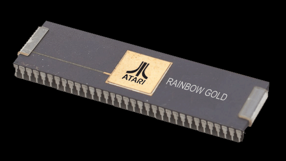

Project RAINBOW
Rainbow was a new chipset
being developed within Atari's Corporate Research labs.
Also known as "ASRL" Atari Sunnyvale Research Lab.
Rainbow was the codename for a new set of graphics chips and a
new audio processor. This was a project that was started by
Atari's Semiconductor Group manager Steve Saunders along with
Atari Corporate Research engineer Rob Alkire.
The graphics portion
consisted of 2 custom chips: Silver & Gold.
Silver was a Sprite Processor. A system could add on
as many sprite processors as needed. Gold was the display
list processor and memory manager. Several memo's and
emails referred to the Rainbow chips as Phase 2. Possibly
to mean that the original Colleen chipset was Phase 1 and this
was meant to finally be Atari's next new chipset that would take
the company and its products into a new era or "phase."
It was originally believed
that the Tramiel's and their head of Engineering never knew
about the Rainbow chipset or other advanced projects within
Atari. This turns out, not to be the case. In fact Steve
Saunders and Rob Alkire had a presented the chipset directly to
Shiraz Shivji of Atari. Who at the meeting, didn't even
open the binder to review the specifications of the chipset and
took no interest in the chipset graphics portion: the Silver and
Gold chips.
SILVER

 Rainbow: Silver
Chip. Specifications. January 23, 1984
Rainbow: Silver
Chip. Specifications. January 23, 1984
GOLD

 Gold HSPICE simulations and chip designs.
Gold HSPICE simulations and chip designs.
Rainbow: Gold Chip.
Specifications. October 28, 1983
Rounding out this new chipset
was the Audio portion consisting a new 64 voice synthesizer
called AMY.
AMY